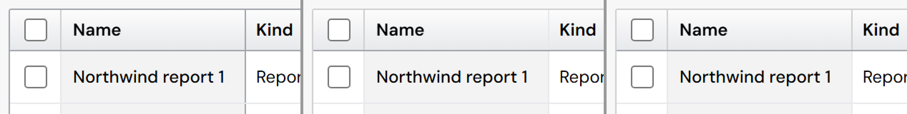
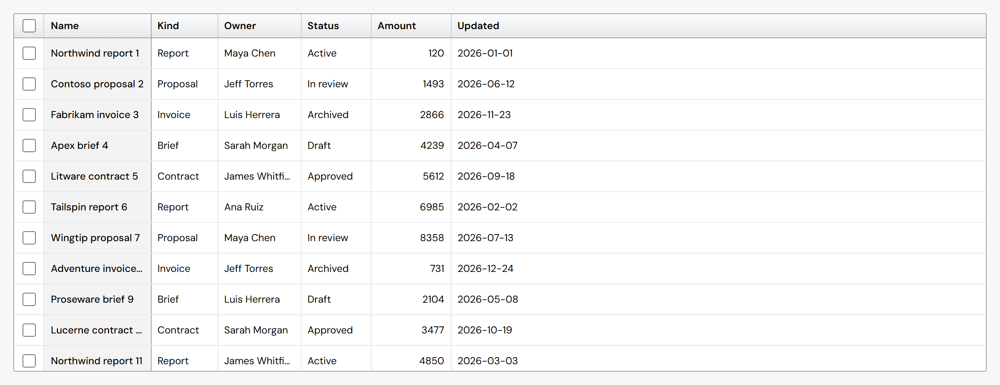
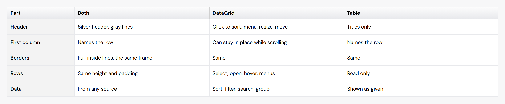
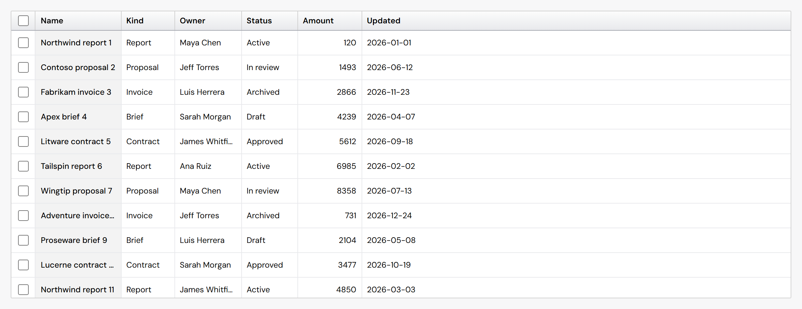
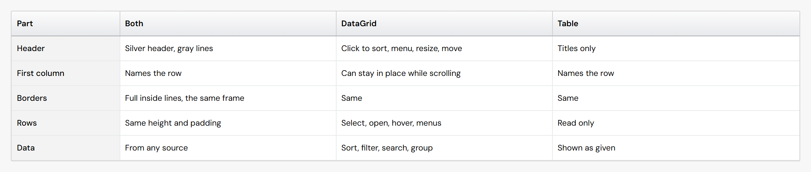

Grid and Table: the outer frame
Nothing has been changed yet. Option L is drawn on today's code for these pictures only.
What is measured today
- The outer frame and the line under the headers are the same: 1px, gray 400. This holds at 100%, 125% and 150% display scaling, on the same screen pixels.
- The frame still reads darker and thicker: it runs around all four sides against white, while the header line sits under the gray header shading and blends into it.
- The edge after the frozen first column ("Name") is also gray 400 today, as dark as the frame.
The corner, zoomed 3×

Today (#310): frame gray 400, the same as the header line; frozen edge gray 400

Option L: frame one step lighter (gray 300); header line gray 400; frozen edge light like the inside lines

- Size if chosen: small. Two token values: the grid's frame color and the frozen edge color, for DataGrid and Table, from existing palette colors.
- It reverses the frame and frozen-edge part of the #310 decision; the header line and the inside lines stay as they are.
For reference: before #310 (the "top grid")
The same lines as option L, on the code of that day.

